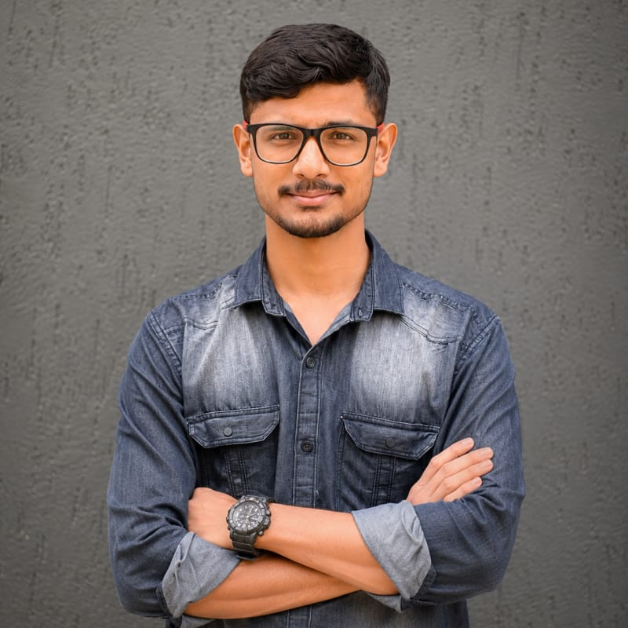

|
I am a Computer Science researcher and undergraduate at KLETech-CEVI specializing in Human-Centric Computer Vision, 3D Vision, and Generative AI for Digital Humans. My research lies at the intersection of computer vision, graphics, and machine learning, with a specific focus on synthesizing realistic Human-Object Interactions (HOI) and simulating physics-grounded Garment Deformation. Through my work, I build physics-guided deep learning frameworks to bridge the gap between virtual characters and the physical world. Some of my recent contributions include developing MDSim, a neural multi-layer draped garment simulator with differentiable inter-garment friction, and engineering Geometric Domain Adaptation pipelines for zero-shot human-object interaction synthesis (HOI) on out-of-distribution assets. I am also the creator of GRASP4Figs, an OCR-augmented, reward-conditioned captioning pipeline for scientific document understanding presented at ICVGIP 2026. I am incredibly proud to have been named the Global Runner-Up (2nd place) at the CVPR NTIRE 2026 challenge for High-FPS Video Frame Interpolation, and to have co-authored research in skin cancer classification (MK-DCSAU-Net) published at ICETCI 2026 (Springer Nature). Technically, my research foundation is built on PyTorch, CUDA, Docker, and transformer-based diffusion architectures. |
 |
|
Research & Technical Focus Areas
My main research and engineering areas of focus include:
Technical Skills
• Languages: Python, C++, Java, C, SQL, MATLAB
Featured Projects
Multi-layer garment simulation with differentiable friction
Domain adaptation for out-of-distribution 3D asset grasping
OCR-Augmented reward-conditioned captioning for figures
Multi-kernel split-attention network for skin lesions
Recent Updates
Education
Experience
Publications & Research Projects
3D Vision & Garments
Proposed a differentiable inter-garment friction framework for neural simulation of multi-layer draped garments (e.g., dupattas, sarees) on GNNs. Introduces a differentiable friction loss that penalizes tangential slip relative to normal forces, scaled by a material-conditioned friction predictor pretrained on textile data. Resolves the two-garment coupling instability and prevents draped clothing from sliding off SMPL bodies.
3D Vision & Garments
Developed a Geometric Domain Adaptation pipeline integrating custom out-of-distribution 3D assets (e.g. Indian mythological weaponry like swords/spears) into the CHOIS framework. Employs a Topological Proxy Strategy to align geometry with training classes (e.g. clothes stands) and dynamically re-calibrates Signed Distance Fields (SDF) and Basis Point Sets (BPS). Eliminates the "Ghost Grasp" artifact, reducing hand penetration errors to a negligible 0.15 cm.
VLM & NLP
Accepted at ICVGIP 2026. Focuses on paragraph-length analytical captioning of scientific plots and charts. Augments the BLIP vision-language model with a tokenized OCR-context injection mechanism and composite helpfulness/length rewards within a UDRL-HF reinforcement learning framework (Case 1). Identifies and mitigates mention-paragraph-induced grounding collapse (MPGC) in Qwen2.5-VL-7B using zero-shot visual-grounding prompts (Case 2). Deployed as a web application with an interactive chatbot.
Publication
Published at ICETCI 2026 (Springer Nature). Proposes a Multi-Kernel split-attention U-Net (MK-DCSAU-Net) to handle scale variability of skin lesions using parallel $3\times3, 7\times7, 11\times11$ receptive fields. Implements a mathematical Blackout pipeline to filter out background dermoscopic noise (hair, ruler marks, gel residue) and incorporates a Spatial Attention Module (SAM) to enhance diagnosis, yielding a mean IoU of 0.8656 (+7.4% over baseline) and 0.8920 ROC-AUC.
Challenge & Datathon
Named the **Global Runner-Up** (2nd place) in the High-FPS Video Frame Interpolation (VFI) track at the CVPR NTIRE 2026 Workshop, achieving a 26.316 dB PSNR score.
Challenge & Datathon
Developed models for neuroimaging-based classification tasks as part of the Women in Data Science (WiDS) Datathon 2025. |
|